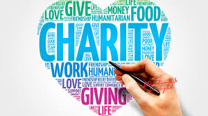
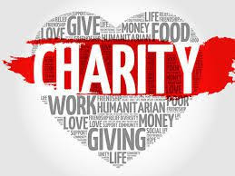

American Red Cross
The Red Cross is a humanitarian organization that operates worldwide, providing assistance to those in need, particularly during emergencies and disasters. Some of the services provided are disaster response and relief, emergency preparedness, blood services, and health and safety training.
Ocean Conservancy
Ocean Conservancy works to address key threats to ocean health, including pollution, overfishing,habitat destruction, and climate change. They advocate for policies and practices that promote sustainable fisheries management, marine protected areas, and ecosystem conservation.
Oceana
Oceana advocates for science-based policies and regulations to protect marine habitats, reduce overfishing, and promote sustainable fisheries management. They engage with policymakers, governement agencies, and stakeholders to advance policies that safeguard ocean health and biodiversity.